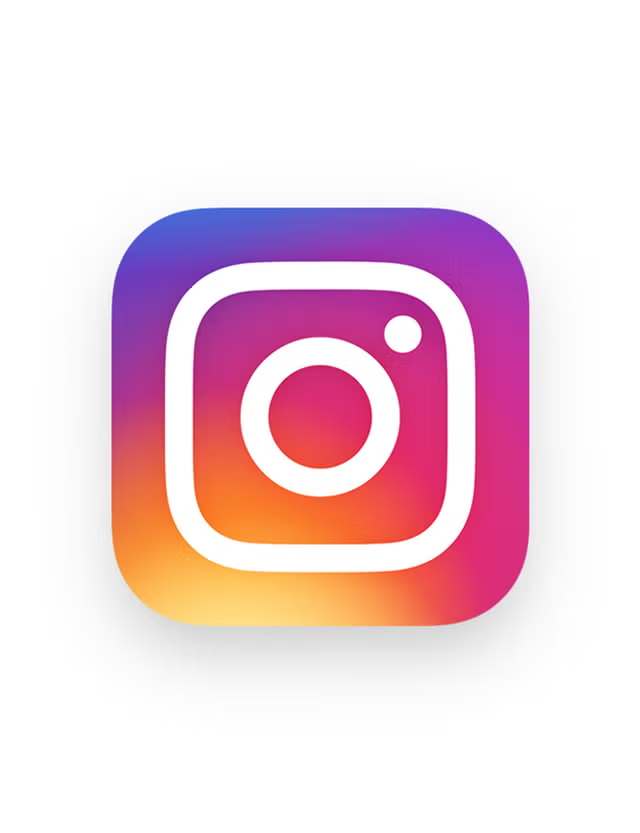
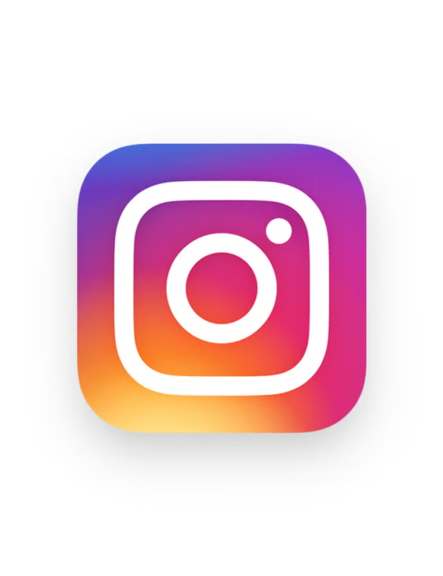

Derick Espinosa Vargas
consigo que tu cuenta y negocio crezcan en redes


Primer cliente en confiar en mi trabajo y, con el tiempo, también un gran apoyo profesional. Gracias a su confianza he podido crecer, mejorar mis habilidades en la grabación y edición de video y afrontar nuevos retos creativos en proyectos reales. Trabajar con esta barbería me permitió aprender a crear contenido para redes sociales, destacar la identidad de marca y mantener un flujo de trabajo profesional con entregas de alta calidad.
Cliente al que conocí gracias a Hugo Martín. Colaboré directamente con él en la creación de un video promocional para Halloween, participando tanto en la grabación como en la edición. Gracias a este proyecto tuve la oportunidad de darme a conocer y conectar con un nuevo cliente, ampliando mi red profesional.
Cantante y empresario con múltiples negocios. Colaboré en la creación de contenido audiovisual enfocado en reforzar su imagen artística y profesional, adaptando el estilo del video a la identidad de sus proyectos y a la promoción en redes sociales.

 
